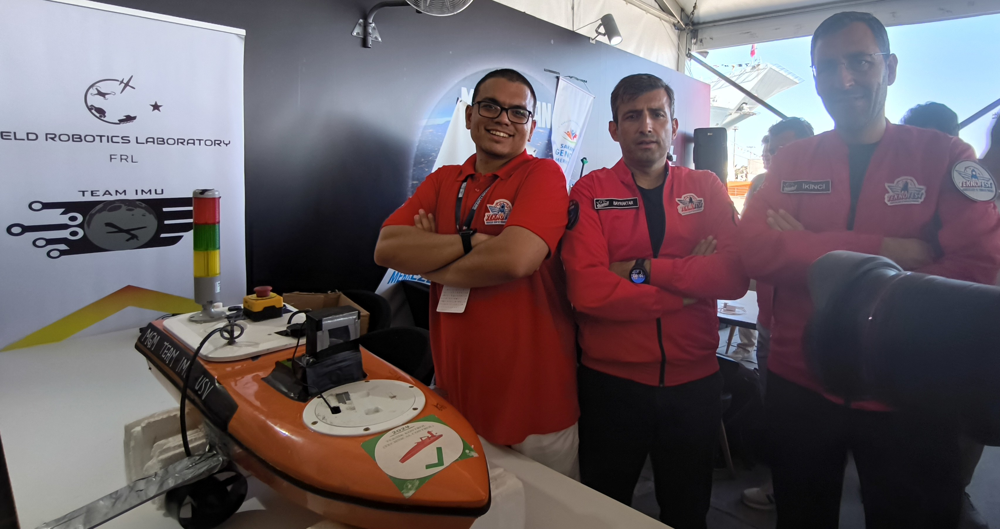
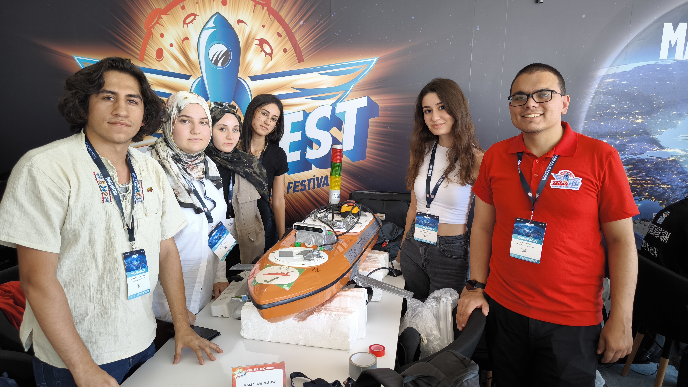
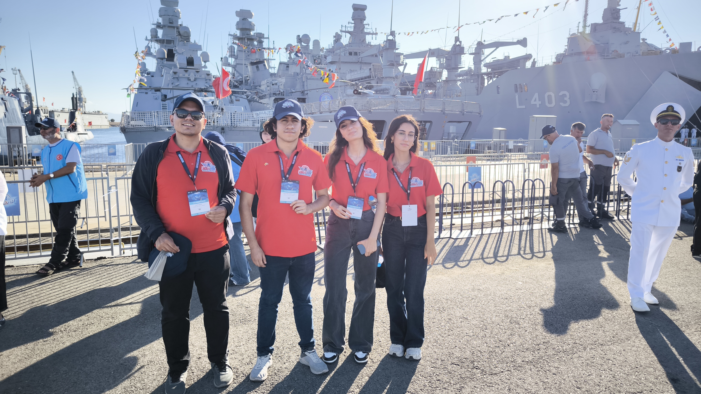
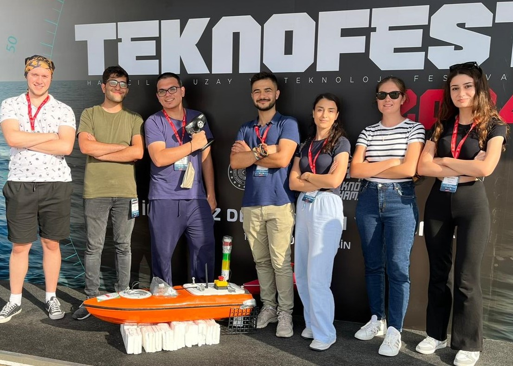
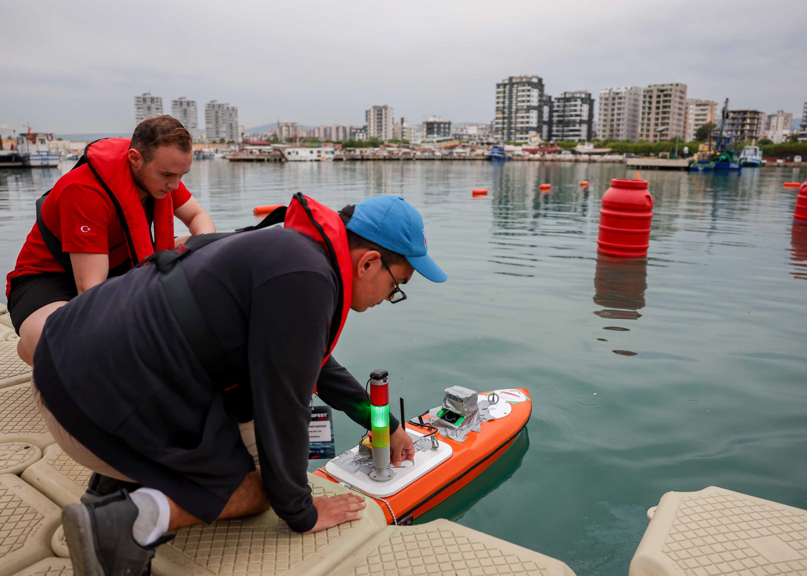
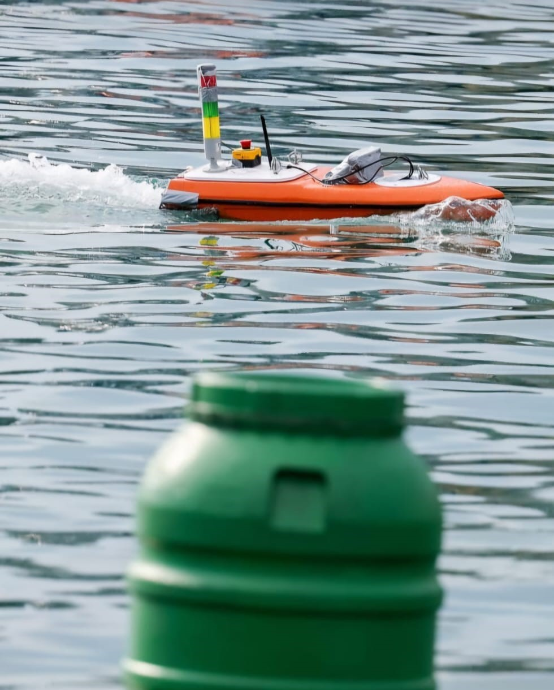
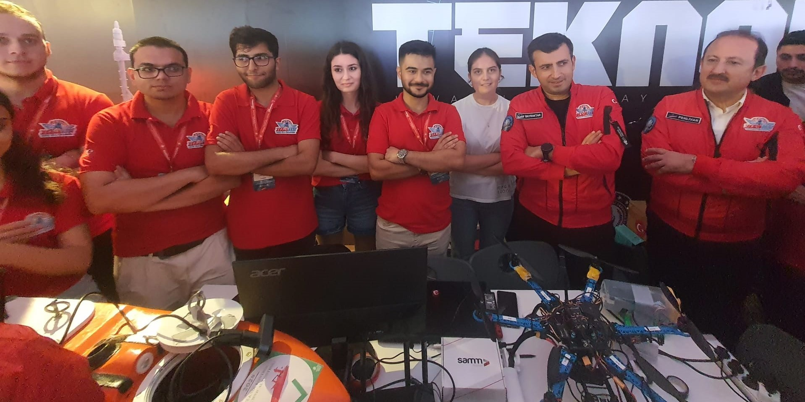

2025 Teknofest USV Competition
Team IMU USV from the Field Robotics Laboratory at Istanbul Medeniyet University successfully completed the TEKNOFEST Unmanned Surface Vehicle Competition held at Istanbul Naval Shipyard Command on August 28-31, 2025.
The competition featured three tracks, which teams were expected to complete using the USV in autonomous mode. In the first track, a waypoint following task is presented. The USV navigated a path marked by orange buoys on the right and left side of the parkour, following a set of pre-defined waypoints.
The second track featured a point following task which tests the USV's ability to navigate between a start and end point, dynamically avoiding multiple yellow buoys placed as obstacles.
The third track featured a Kamikaze Engagement Task. In this task, an Unmanned Aerial Vehicle (UAV) detected a color plate placed on the ground from a bird's-eye view, and the USV then engaged at the buoy that has the same color.
We extend our sincere gratitude to Teknofest, T3 Foundation, Aselsan, ASFAT and Republic of Türkiye Ministry of National Defence for organizing such a remarkable competition. A special thanks to the Maltepe Youth Center, part of the Ministry of Youth and Sports of Turkey, and to Ali Ramazan Tak, General Manager of Medeniyet Teknopark, for their support.
Congratulations to the team members: Mustafa Bayrak, Arzu Doğan, İlaydacan Nacitarhan, Berra Nur Alkan, Jelsin Stiben Sanchez Almanza, Makbule Boz, Nesibe Ebrar Çimen, Zeynep Baysal, Metehan Kara, Ece Efe, and Fırat Oğur.



2024 Teknofest USV Competition
Team IMU USV from the Field Robotics Laboratory at Istanbul Medeniyet University successfully completed the TEKNOFEST Unmanned Surface Vehicle Competition held at Mersin Erdemli Fishing Shelter on September 19-22, 2024.
The competition featured two tasks, both of which teams were expected to complete using the USV in both manual and autonomous modes. In the obstacle avoidance task, the USV navigated a path marked by green obstacles on the left and red obstacles on the right, avoiding collisions throughout the course. In the harbor docking task, an Unmanned Aerial Vehicle (UAV) detected a randomly positioned number from a bird's-eye view, and the USV then docked at the corresponding port where the number was located.
We extend our thanks to Teknofest and T3 Foundation for organizing such a remarkable competition. A special thanks to the Maltepe Youth Center, part of the Ministry of Youth and Sports of Turkey, and to Ali Ramazan Tak, General Manager of Medeniyet Teknopark, for their support.
Congratulations to the team members: Mustafa Bayrak, Burak Rüstemoğulları,Zafer Tunçer, Arzu Doğan, İlaydacan Nacitarhan, Gökhan Altun, Şaban Kahraman, Muhammed Buğra Ayhan Sudegül Gürkök, and Gökdeniz Karadeniz.




Virtual RobotX (VRX) 2023
Team IMU-VRX from Field Robotics Laboratory at Istanbul Medeniyet University secured 3rd place in the VRX 2023 competition! Congratulations to our team members: Mustafa Bayrak, M. Buğra Ayhan, Ayşenur Yörür, Burak Rüstemoğulları, Zafer Tunçer.
Our experience from last year's competition, combined with the hard work of our members, ultimately led us to this remarkable achievement. The VRX 2023, featuring 8 challenging missions, put our skills to the test in object detection, localization, and autonomous motion planning. We take pride in representing Istanbul Medeniyet University and Turkey in the biggest international simulation competition for autonomous surface vehicles.
Thanks to RoboNation, Naval Postgraduate School, Open Robotics and each of 34 competitor teams for making this amazing competition possible. #VRX2023


Roboik 2022
Team IMU-USV secured a place among the top 10 teams in the finals of the ROBOIK Unmanned Surface Vehicles Competition, organized by the Presidency of Defense Industries. As part of the competition, we developed an unmanned surface robot capable of autonomously performing tasks outlined in the competition regulations.
Congratulations to the team members: Mustafa Bayrak, Emre Fikri Baltacı!


Virtual RobotX (VRX) 2022
The Field Robotics Laboratory made a successful debut at its first USV competition, VRX 2022. Engaging in 8 challenging missions, we showcased our expertise in object detection, localization, and autonomous motion planning. It's an honor to represent Istanbul Medeniyet University and Turkey in the largest international simulation competition for autonomous surface vehicles.
We extend our gratitude to RoboNation, Naval Postgraduate School, Open Robotics, and all 32 competitor teams for their contributions in making this remarkable competition possible.
Congratulations to the team members: Mustafa Bayrak!